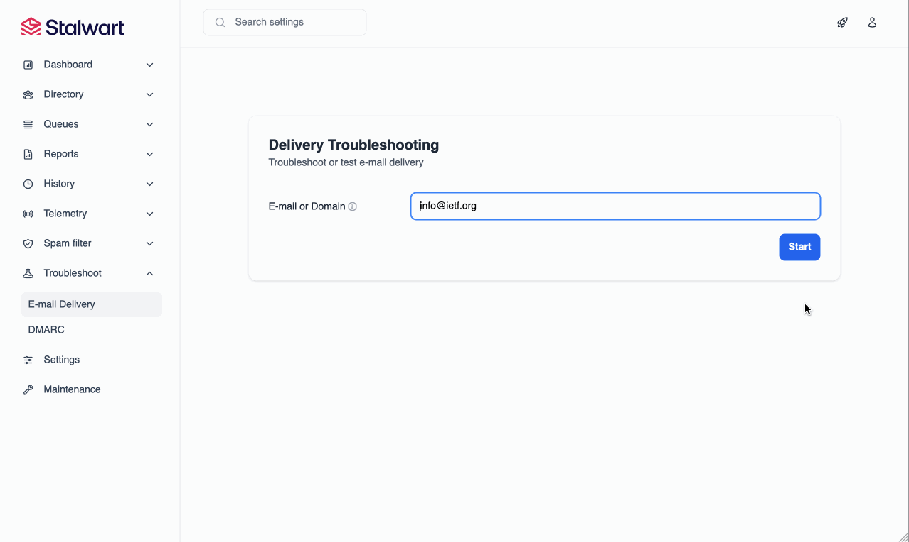
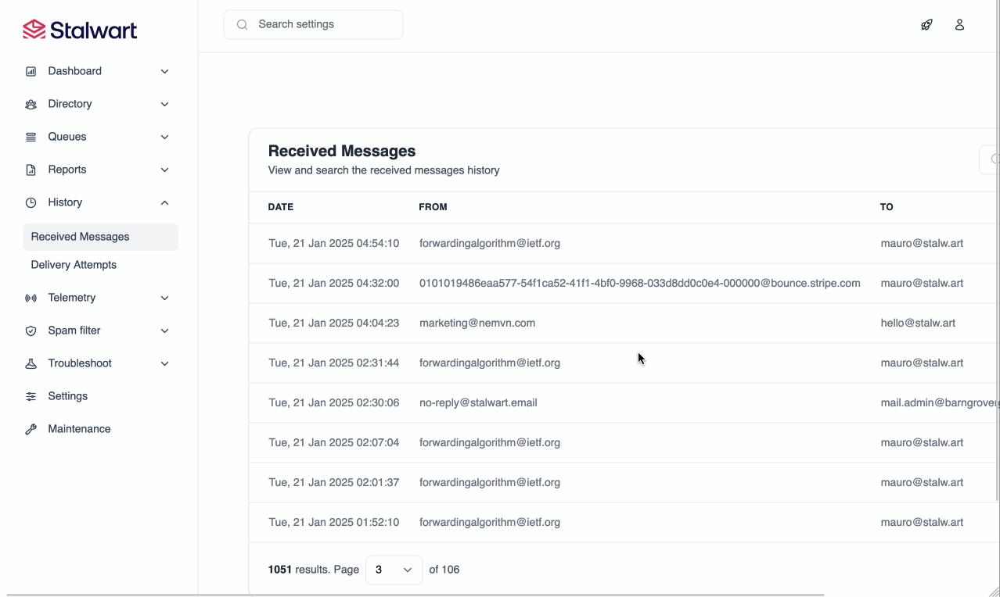
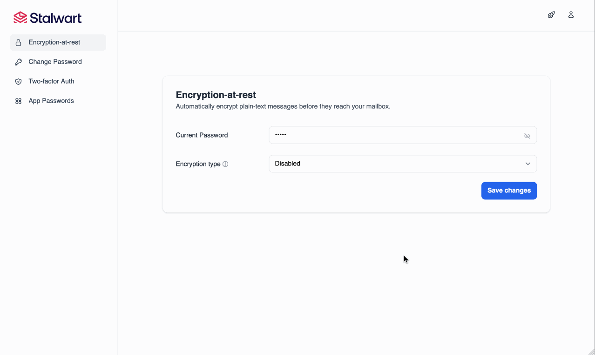
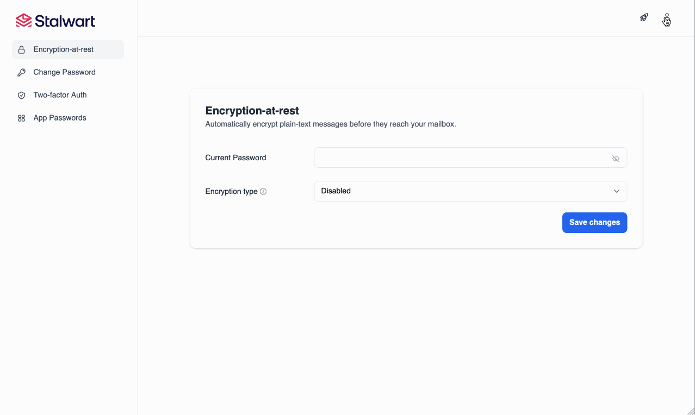
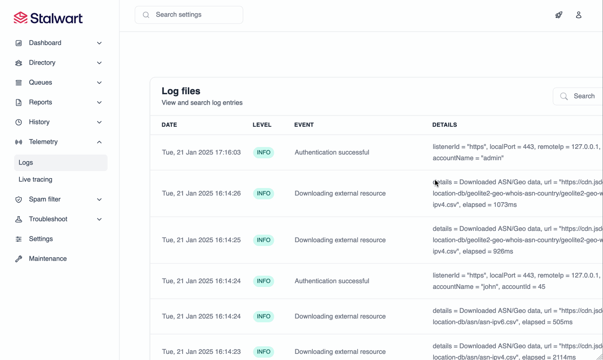
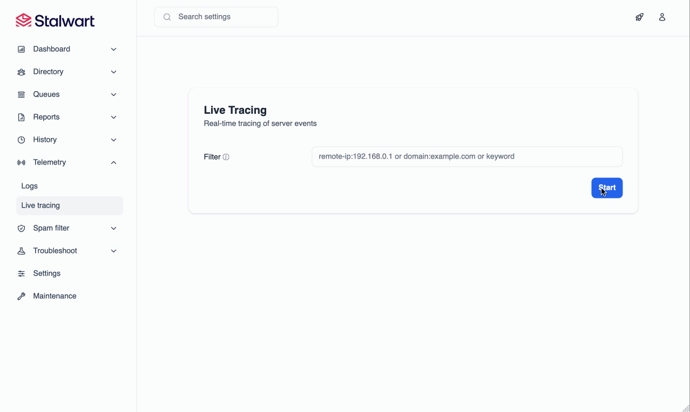
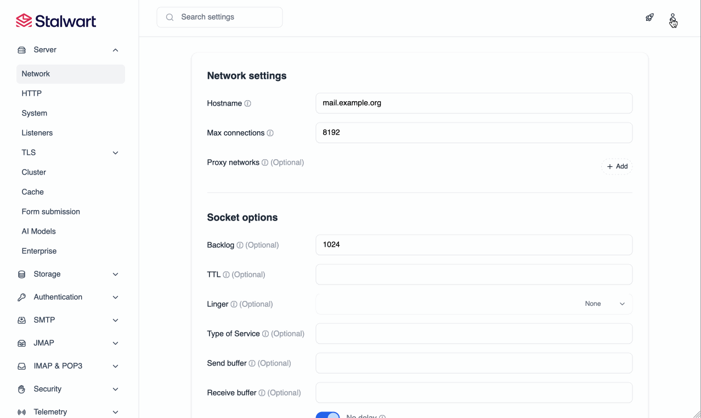
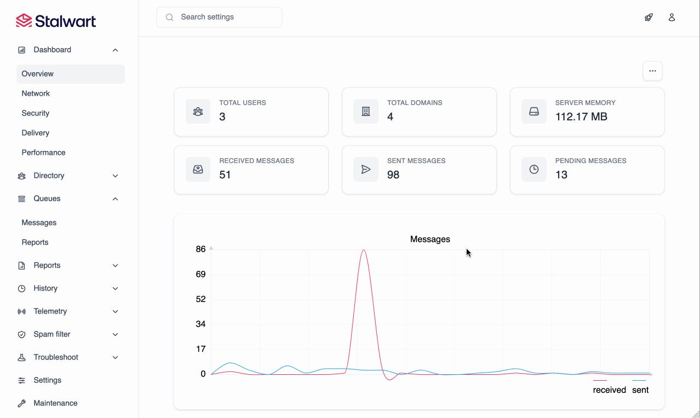

The email landscape before Stalwart
Self-hosting your email shouldn't require a PhD
Postfix + Dovecot: A Relic of Complexity
Decades-old software, scattered tools, and a never-ending struggle to keep it all running.- Mail server software remains largely unchanged for over 20 years
- Requires multiple tools, each with its own configuration file and quirks
- Maintenance demands expertise across a wide range of unrelated systems
- Debugging issues often involves sifting through scattered logs and configurations
- Dependencies across tools create fragile setups prone to breaking
- No unified interface, admins must juggle numerous separate UIs and CLI tools
- Not designed for scalability or modern email protocols
Mail-in-a-box: Simplified, yet still Complex
Solutions like Mail-in-a-Box attempt to simplify but only mask the complexity.- A quick fix that doesn't solve the long-term headaches of traditional mail servers.
- Wraps complexity in a box, but the challenges of maintenance and scaling remain.
- Streamlines setup but leaves the underlying fragmentation untouched.
- Running a mail server shouldn’t feel like assembling a jigsaw puzzle with a thousand pieces...
Dovecot (IMAP) + Postfix (MTA) + SpamAssassin + Radicale (DAV) + postgrey + OpenDKIM + OpenDMARC + OpenSSL + Fail2ban + Certbot + Munin + Nginx
Say Goodbye to Complexity
... and say EHLO to Stalwart
... and say EHLO to Stalwart
220 mail.stalw.art Stalwart ESMTP at your service
EHLO yourcompany.org
... and say EHLO to Stalwart
220 mail.stalw.art Stalwart ESMTP at your service
EHLO yourcompany.org
250-mail.stalw.art you had me at EHLO
250-STARTTLS
250-SMTPUTF8
250-SIZE 104857600
250-REQUIRETLS
250-PIPELINING
250-NO-SOLICITING
250-ENHANCEDSTATUSCODES
250-CHUNKING
250-BINARYMIME
250 8BITMIME
Stalwart
All-in-One Mail & Collaboration Server
Stalwart
All-in-One Mail & Collaboration featuring:- SMTP, JMAP, IMAP4, POP3 and ManageSieve server
- CalDAV, CardDAV and WebDAV server
- Built-in spam and phishing filter
- Web-based administration
- Scalable & Robust
- Modern & Programmable
- Secure & Memory safe
- Available for Unix, Windows and Docker
Stalwart
A streamlined, all-in-one mail & collaboration server that’s ready in minutes.
Stalwart
A streamlined, all-in-one mail & collaboration server that’s ready in minutes.Stalwart
A streamlined, all-in-one mail & collaboration server that’s ready in minutes.Stalwart
A streamlined, all-in-one mail & collaboration server that’s ready in minutes.
Protocol-rich Message Store
Compatible with modern and legacy protocols.
JSON Meta Application Protocol
Full implementation of JMAP and most extensions:- JMAP Core (RFC 8620)
- JMAP for Mail (RFC 8621)
- JMAP for Sieve Scripts (draft-22)
- JMAP for WebSocket (RFC 8887)
- JMAP Blob Management (RFC 9404)
- JMAP for Quotas (RFC 9425)
- JMAP for Calendars and Contacts (coming Q3 2025)
Internet Message Access Protocol
Modern IMAP implementation including:- IMAP4 revision 2 support (RFC 9051)
- IMAP4 revision 1 (RFC 3501) compatible
- Conditional Store and Quick Resynchronization (RFC 7162)
- Access Control Lists (RFC 4314)
- ... and dozens of other IMAP extensions
Legacy Protocols
Broad compatibility with legacy protocols such as:- POP3 (RFC 1936)
- POP3 extensions including SASL and TLS
- ManageSieve (RFC 5804) for remotely managing Sieve scripts
SMTP Server
Programmable MTA for modern email systems.
Programmable
Exceptional flexibility and filtering capabilities- Dynamic configuration rules with Expressions
- Sieve scripting from every SMTP stage
- Milter filters support
- MTA Hooks (modern Milter replacement)
- Envelope rewriting and message modification
Sender and Message Authentication
Every email sent and received is verified for authenticity- DMARC verification and reporting
- DKIM verification, signing and failure reporting
- SPF policy evaluation and failure reporting
- ARC verification and sealing
- Reverse IP validation
- Automatic analysis of DMARC reports
Delivery & DMARC Troubleshooting
Transport Security
Safeguards email communications at the transport layer- DANE Transport Layer Security
- MTA Strict Transport Security (MTA-STS)
- TLS Reporting (TLS-RPT) delivery and analysis
- Automatic analysis of incoming TLS reports
DMARC & TLS-RPT Analysis

Powerful Message Queues
Advanced queue management for efficient delivery- Distributed and fault-tolerant message queues
- Inbound & outbound rate limiting
- Quotas
- Dynamic routing rules
- Delayed & priority delivery support
- Unlimited virtual queues
Web-based Queue Management

Message Delivery History
Collaboration Server
Built-in support for calendars, contacts and file storage.
Calendars
Seamless scheduling for teams and individuals- CalDAV support
- JMAP for Calendars support (coming Q3 2025)
- Event scheduling
- Alerts and notifications via email
- Integrated free/busy availability
- Support for group and shared calendars
Contacts
Manage, share, and sync your contacts- CardDAV support
- JMAP for Contacts support (coming Q3 2025)
- Support for group and shared address books
File Storage
Secure, centralized access to your documents- WebDAV support
- JMAP for File Storage support (coming Q3 2025)
- Support for user, group and shared file spaces
- Secure file sharing with fine-grained permissions
Sharing
Granular sharing control over calendars, contacts, and files- Support for user, group, and shared resources
- Share calendars, address books, and file spaces
- Fine-grained permission control for read, write, and manage access
- Based on WebDAV ACL and JMAP for Sharing standards
Spam & Phishing Filter
Keeps your emails safe from threats and publicity.
Advanced Spam and Phishing Protection
Fast and reliable filtering for today's threat landscape- Built-in filter: does not require third party software
- Fast: Rules are compiled, no regular expressions are used
- Protection that rivals popular solutions in the market
- Proactive spam defense with community maintained rules
Efficient Filtering
Filtering tools to keep your inbox clean and secure- Protection against URL attacks, sender spoofing, etc.
- DNSBLs
- Collaborative digest-based spam filtering (Pyzor)
- Trusted reply tracking
- Sender reputation monitoring
- Greylisting & spam traps
AI-Enhanced Filtering
Harness machine learning for unmatched spam and phishing defense- Linear spam classifier (global and per-user)
- Automatic training of classifiers
- LLM-driven filtering and analysis (self-hosted or cloud) *
- LLM-assisted Sieve scripts *
- BERT models for spam classification (coming Q4 2026)
Secure and Robust
Safeguards data both at rest and in transit.
Encryption-at-Rest
Asymmetric encryption at rest using open standards- OpenPGP and S/MIME support
- Automatic encryption of plain text messages
- Optional obfuscation in full text search store
- Unlike other solutions, no private keys are stored
- Administrators can't read user's encrypted data
Encryption-at-Rest in Action
Security and Access Control
Proactive security mechanisms and enhanced authorization- Automated blocking of IP addresses that attack or abuse
- Rate and concurrency limiting
- Permissions
- Access Control Lists (ACLs)
- Roles & Groups
- Memory safe (thanks to Rust)
Feature-rich and Customizable
Next-level capabilities for dynamic environments.
Pluggable Storage Backends
Diverse storage options for every need- FoundationDB for distributed data storage
- PostgreSQL and MySQL for relational data storage
- RocksDB and SQLite for fast, local data storage
- Redis for caching and lookup storage
- S3 and Azure for distributed blob storage
- Filesystem for local blob storage
- ElasticSearch for full-text search
- LDAP for authentication
Expressions
Dynamic configuration rules based on context- Used in settings for conditional logic and data transformation
- Compiled at startup and fast to evaluate
- Control various aspects of the server's behavior
- i.e. routing, authentication, spam rules, and more
Expressions
Feature-rich
Modern features for a modern email server- Full-text search in 17 languages (built-in)
- Sieve scripting with support for all extensions
- Email aliases & Mailing lists
- Sub-addressing & Catch-all addresses
- Automatic account configuration and discovery
- Automatic TLS certificate provisioning with ACME
- Multi-tenancy support with domain and tenant isolation *
- Disk quotas per user and tenant
- REST API and many more features...
Enterprise ready
Designed to meet the demands of mailbox providers and enterprise environments.
Built to Scale
Engineered to scale effortlessly from the start- Seamless load balancing and high availability for millions of mailboxes
- Peer-to-peer cluster coordination or via Kafka, NATS or Redis
- Recovers from failures with minimal operational impact
- Partition-tolerant failure detection
- Kubernetes, Apache Mesos and Docker Swarm support for automated scaling
- Read replicas and sharded storage backends *
Authentication
Modern authentication mechanisms for secure access- OpenID Connect authentication
- OAuth 2.0 authorization with code and device flows
- LDAP, OIDC or SQL authentication backend support
- Two-factor authentication with TOTP
- Application passwords
Self-service Password Management
Observability
Comprehensive monitoring and observability tools- Logging and tracing to OpenTelemetry, journald, log, etc.
- Metrics with OpenTelemetry and Prometheus integration
- Webhooks for event-driven automation
- Alerts with email and webhook notifications
- Live tracing and metrics *
Log Viewer
Live Tracing
Web-based Administration
Modern and intuitive web interface for managing your mail server.
Web-based Administration
Effortless web-based management at your fingertips- Full control over the mail server directly from a web browser
- No need to SSH into the server for common tasks
- Self-service portal for password and encryption-at-rest management
- Developed in Rust as a Single Page Application (SPA)
- Fast and responsive
Web-based Administration Features
Comprehensive features for managing your mail server- Dashboard with real-time statistics and monitoring *
- Account, domain, group and mailing list management
- SMTP queue management for messages and outbound DMARC and TLS reports
- Report visualization interface for received DMARC, TLS-RPT and ARF reports
- Configuration of every aspect of the mail server
- Log viewer with search and filtering capabilities
Web-based Configuration
Account Management

Dashboard
Thank you!
Ready for an effortless mail server? Try Stalwart today.
Thank you!
Ready for an effortless mail server? Try Stalwart today.
https://stalw.art
hello@stalw.art